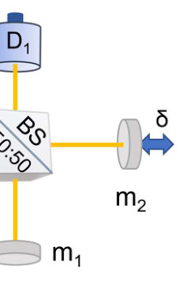

Authors: Ziheng Zhu, Yu Chen
Type: theory · Category: other · PDF: https://arxiv.org/pdf/2610.20043v1
Analysis basis: full PDF text, analyzed in chunks
Topic relevance: 🔥 Tavis-Cummings & cavity-many-emitter 4/5 · 🔥 driven-dissipative phase transition 4/5 · Dicke superradiance 3/5 · analog quantum simulation 3/5 · correlated / nonlocal dissipation 2/5 · methods for driven-dissipative 2/5 · non-equilibrium universality 2/5 · superradiant laser 2/5 · Keldysh / 2PI / non-Gaussian methods 1/5
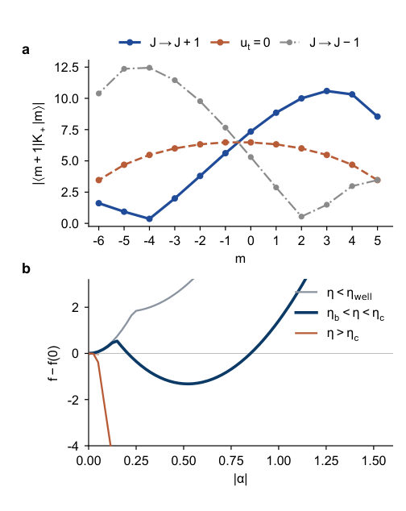
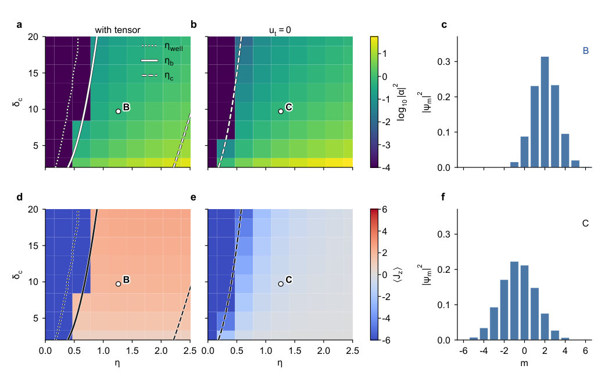
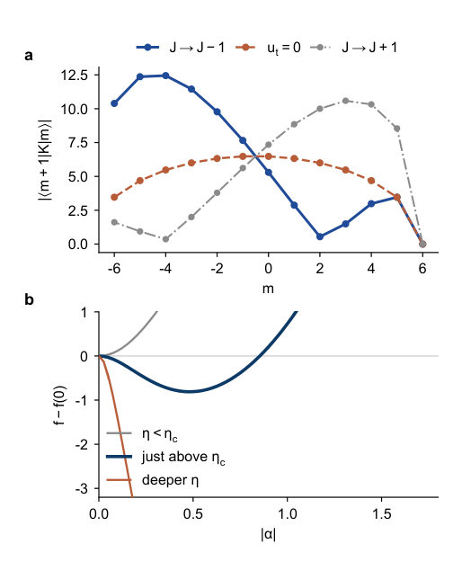
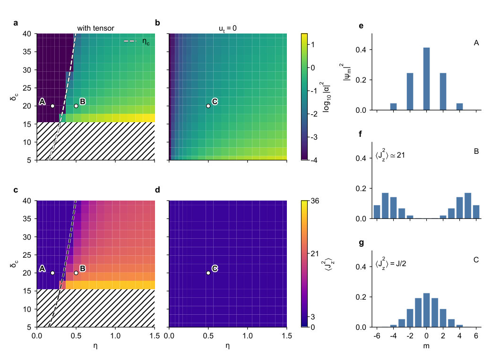
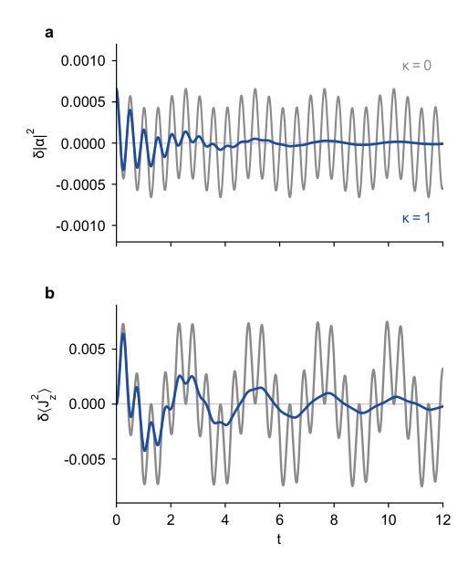
Summary. This paper analyzes the extended Dicke model for open-shell atoms coupled to a cavity, incorporating tensor polarizability effects. By comparing circular and linear pumping geometries, the authors show that the tensor term dictates distinct quantum phase transition behaviors and selects specific ordered Zeeman sectors. The findings highlight the sensitivity of cavity quantum dynamics to the precise structure of the atomic coupling Hamiltonian.
Why it may be interesting. This work is highly relevant as it extends cavity QED models by incorporating higher-order tensor polarizability, revealing how these higher-order terms fundamentally alter the nature (order) of quantum phase transitions and the resulting stable quantum states.
Main problem. The study investigates the extended Dicke model for open-shell atoms, specifically incorporating the effects of tensor polarizability, which extends beyond standard scalar and vector couplings.
Main result. The polarization design (circular vs. linear pump) dictates distinct quantum dynamics, leading to different types of phase transitions (first-order vs. continuous) and unique steady-state ordered phases.
Method. The analysis employs mean-field theory, free energy minimization, and linear stability analysis applied to the effective Hamiltonian derived from the full atomic-cavity interaction.
Model / system. The system models open-shell atoms (e.g., $^{168} ext{Er}$) coupled to a shared cavity mode, described by an extended Dicke Hamiltonian incorporating scalar, vector, and tensor polarizability terms.
Key observables. Order parameters include $\langle \hat{J}_z angle$ (for circular pump) and $\langle \hat{J}_z^2 angle$ (for linear pump); dynamics are monitored via photon number and Zeeman populations.
Important parameters / regimes. Key parameters include the coupling strengths ($\eta_0, V_0$), effective detuning ($\delta_{ ext{eff}}$), and the specific ratios fixed by the atomic angular momentum ($J=6$).
Assumptions / limitations. The analysis relies on the mean-field approximation, treating the atoms via a product-state spinor, and neglects finite-$N$ correlations and atomic dissipation.
Figures summary. Figures illustrate the dynamics of the system under linear pumping, showing photon number and $\langle J_z^2 angle / E$ evolution, and show Zeeman populations over time for different coupling regimes.
Paper structure. The paper progresses by first defining the extended Hamiltonian, then analyzing steady-state phase transitions using free energy minimization for both circular and linear pumping geometries, followed by a detailed discussion of linear stability and dynamic outcomes.
We study the extended Dicke model obtained from the scalar--vector--tensor polarizability of open-shell atoms coupled to a shared cavity mode. For a single electric-dipole channel, rotational symmetry fixes the tensor to vector ratio; we use $^{168}\mathrm{Er}$ with $J=6$ as a product-state example. A circular pump produces a chiral Raman vertex whose tensor-dependent matrix elements select the occupied Zeeman sector. The resulting first-order transition occurs before the empty-cavity branch loses local stability, and the ordered state is read out through $\langle\hat J_z\rangle$. A linear pump instead produces an empty-cavity $\pm x$ cat and a continuous transition into an even-$m$ cat-like state with order parameter $\langle\hat J_z^2\rangle$. With cavity loss alone, the circular trajectory emits a photon burst and approaches a Raman-dark Zeeman pole rather than a finite-field condensate. In the linear geometry, cavity-bright modes are damped toward the cat-like branch while a dark spin mode remains undamped. These are phenomena of that model; the vector-only controls show that they depend on the channel-fixed tensor coupling.
Authors: Zhaohui Zhi, Bo Han, Romain Vasseur, Andreas W. W. Ludwig, Simon Trebst, Guo-Yi Zhu
Type: theory · Category: statistical mechanics · PDF: https://arxiv.org/pdf/2610.18965v1
Analysis basis: full PDF text, analyzed in chunks
Topic relevance: 🔥 quantum measurements 4/5 · driven-dissipative phase transition 3/5 · methods for driven-dissipative 3/5 · non-equilibrium universality 3/5 · Full counting statistics 1/5 · Keldysh / 2PI / non-Gaussian methods 1/5 · analog quantum simulation 1/5 · correlated / nonlocal dissipation 1/5
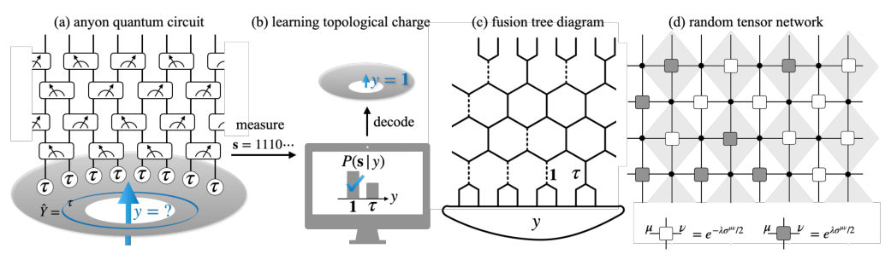
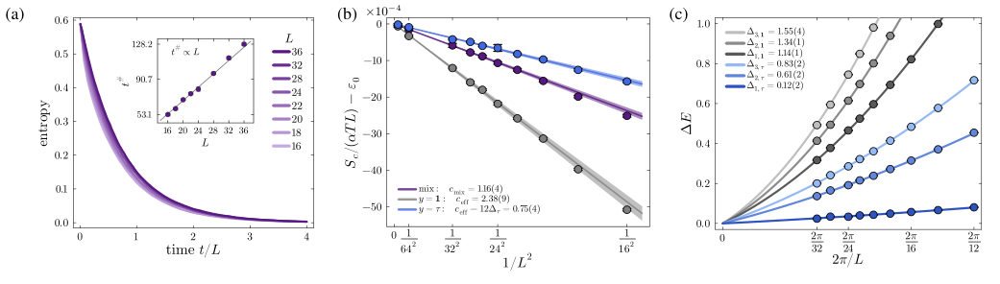
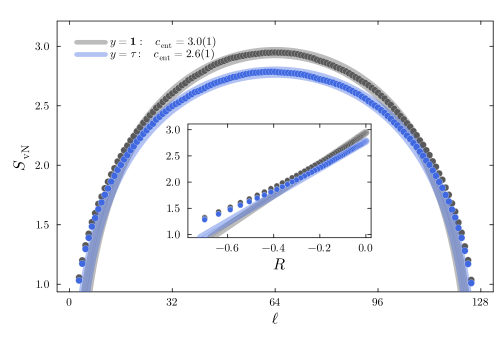
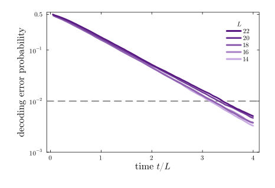
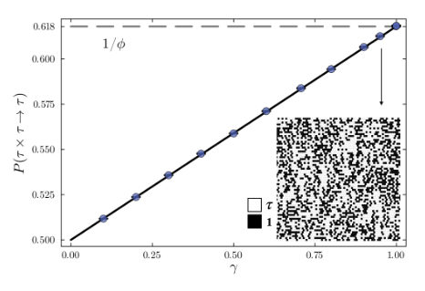
Summary. This work studies measurement-induced criticality in non-Abelian anyon chains using the monitored golden chain model. By analyzing the dynamics under local fusion measurements, the authors demonstrate that the system exhibits universal critical behavior. This establishes a new, measurable framework for understanding topological quantum criticality beyond standard Hamiltonian descriptions.
Why it may be interesting. It provides a concrete, measurable example of how non-unitary dynamics (measurement) can sustain and characterize quantum criticality in topological systems, linking measurement theory to critical phenomena.
Main problem. The paper investigates measurement-induced criticality in non-Abelian anyon chains, specifically generalizing the concept from the toric code to higher-order theories.
Main result. The monitored golden chain ($k=3$) is established as the first non-Abelian generalization of the weakly self-dual quantum critical point, showing that the system remains critical under measurement monitoring.
Method. The dynamics are analyzed by mapping the measurement-only evolution to a random tensor network and performing numerical calculations on scaling properties.
Model / system. The system is the 'monitored golden chain,' a 1D model of interacting Fibonacci anyons. The dynamics are driven by local, non-commuting fusion charge measurements, replacing standard Hamiltonian interactions.
Key observables. Topological charge, Lyapunov gaps, entanglement entropy, effective central charge ($c_{ ext{eff}}$), and the time scale for charge inference ($O(L)$).
Important parameters / regimes. Measurement strength ($\gamma$), system size ($L$), and the topological order parameter $k$ (e.g., $k=3$ for the golden chain).
Assumptions / limitations. The analysis relies on mapping the monitored dynamics to a random tensor network and assuming the self-averaging of Lyapunov exponents.
Figures summary. Figures illustrate purification dynamics, entropy decay scaling with system size, and the scaling of the topological-charge-resolved Lyapunov spectrum.
Paper structure. The paper progresses by defining the measurement-driven dynamics, calculating various scaling diagnostics (entropy, Lyapunov gaps), and establishing the non-Abelian generalization by comparing results to known critical points.
Non-Abelian anyon chains whose interactions favor a single fusion channel host quantum critical ground states described by minimal-model conformal field theories (CFTs) protected by a topological symmetry. We show that their measurement-only counterpart, where non-commuting fusion charge measurements act locally on the anyons of a chain of $L$ sites, provides a fundamental example of a non-unitary CFT controlling a non-Abelian learning problem. Mapping the monitored dynamics to a random tensor network, we numerically find $1/L$ scaling Lyapunov gaps, logarithmic entanglement scaling with the chord length, and an effective central charge in the Shannon entropy of the measurement record. The conserved topological charge sharpens with dynamical exponent $z= 1$ and is learnable by a decoder on an $O(L)$ time scale. As the topological symmetry is a non-invertible symmetry of the $SU(2)_k$ anyon theories, we establish the monitored golden chain $(k=3)$ as a non-Abelian generalization of the weakly (Kramers-Wannier) self-dual quantum critical point of the toric code $(k=2)$, and the first of a family for $k\geq 3$.
Authors: Arturo Mena, Pau Arcos, María Sánchez-Hernández, Benoit Debord, Frédéric Gérôme, Fetah Benabid, Nicolas Y. Joly, Oskar Arrizabalaga, Joseba Zubia, David Novoa
Type: both · Category: quantum information and computing · PDF: https://arxiv.org/pdf/2610.19964v1
Analysis basis: full PDF text, analyzed in chunks
Topic relevance: 🔥 quantum optics experiment 4/5 · Full counting statistics 3/5 · Keldysh / 2PI / non-Gaussian methods 2/5 · interference shaping light 2/5 · methods for driven-dissipative 2/5 · QC/QI experiment 1/5 · quantum measurements 1/5
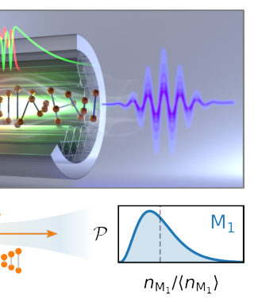
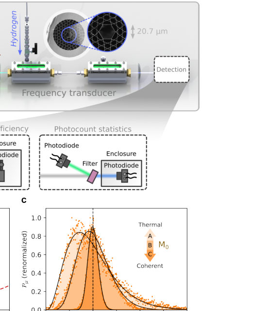
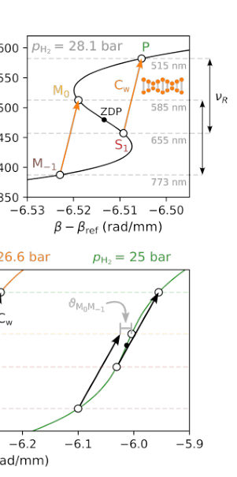
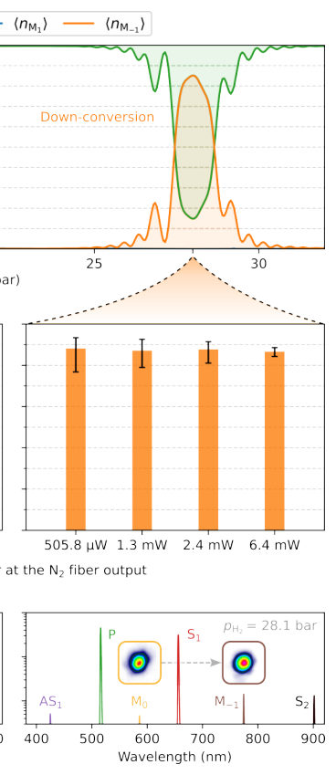
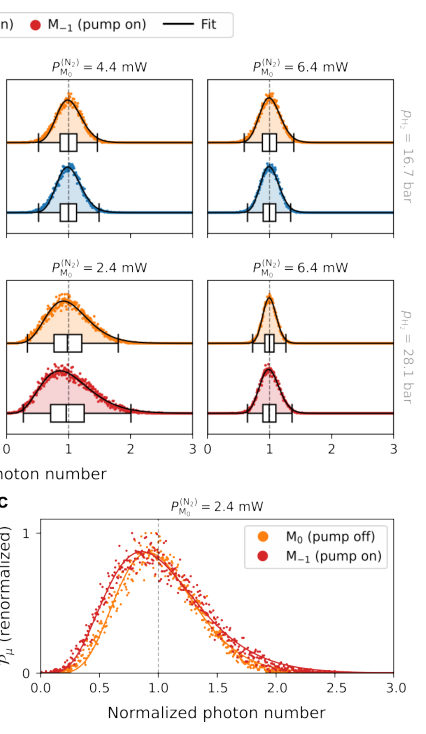
Summary. This paper demonstrates that molecular modulation in hollow-core fibers can selectively convert light frequencies while successfully preserving the photon-number statistics of the light. By achieving high efficiency and broad tunability, this technique offers a versatile, low-energy route to connect disparate quantum systems, such as quantum emitters and atomic memories, within hybrid quantum networks.
Why it may be interesting. This work provides a concrete, fiber-based quantum optical platform for frequency conversion while rigorously proving the preservation of quantum state information (photon statistics), which is a key requirement for building quantum networks.
Main problem. The core challenge is preserving the underlying statistical properties of light during frequency transduction, which is vital for connecting spectrally distinct quantum systems.
Main result. The authors demonstrated the conservation of photon-number statistics during selective frequency up- and down-conversion using molecular modulation in hollow-core fibers.
Method. The study combines theoretical modeling (Maxwell-Bloch formalism) with experimental measurements to characterize the photon statistics and efficiency of the transduction process.
Model / system. The platform utilizes molecular modulation in a hydrogen-filled hollow-core fiber (HCF) to achieve frequency conversion (e.g., 585 nm to 773 nm or 471 nm). The process is analyzed using the semiclassical Maxwell-Bloch formalism.
Key observables. Photon-number statistics (fitted to gamma distributions), zero-delay correlation functions ($g^{(2)}(0)$, $g^{(3)}(0)$, $g^{(4)}(0)$), and Fidelity ($\mathcal{F}$).
Important parameters / regimes. Low pump energies, low gas pressures, and specific optimal pressures for phase-matching (e.g., $\sim 16.7$ bar for up-shifting).
Assumptions / limitations. The analysis relies on the semiclassical Maxwell-Bloch formalism, and statistical analyses assume the applicability of gamma distribution fitting and certain statistical independence for error propagation.
Figures summary. Figures illustrate the experimental setup, phase-matching dispersion diagrams, and histograms showing the measured photon number statistics for both up- and down-conversion processes.
Paper structure. The paper progresses from establishing the need for statistical preservation in quantum interfacing, detailing the HCF molecular modulation mechanism, presenting experimental measurements of conversion efficiency and statistics, and finally developing rigorous mathematical frameworks to quantify the statistical fidelity and uncertainty.
Preserving the underlying statistical properties of light during frequency transduction is essential for interfacing spectrally disparate quantum systems. To do this successfully, the process needs to be highly efficient, broadband and noiseless. Despite significant progress in this field, satisfying all these conditions remains challenging. Recently, molecular modulation-based transduction in hollow-core fibers has emerged as a promising approach, where biphoton correlations were proven to be preserved during frequency up-conversion. However, beyond this previous demonstration of correlation-maintaining conversion, whether molecular modulation can preserve more general statistical properties of light remains experimentally unexplored. Here, we demonstrate the conservation of photon-number statistics during selective frequency transduction by Raman molecular modulation in a hydrogen-filled hollow-core fiber. As a proof of concept, weak 585-nm signals are selectively converted to 773 nm in the near-infrared and to 471 nm in the blue spectral region with near-unity efficiencies. Phase matching between the generated coherence waves and the transitions of interest is achieved through the effective dispersion of the system, enabling independent selection of the frequency up- and down-conversion processes. The preservation of the photon-number statistics of the shifted signals, along with the large frequency shifts, broad tunability and compatibility with quantum-optical fields, provides a versatile fiber-based platform for quantum frequency transduction. In particular, the demonstrated interfacing between visible and near-infrared wavelengths using low pump energies and low gas pressures offers a route towards connecting spectrally distinct quantum systems, including quantum emitters, sensors and atomic quantum memories, within hybrid quantum networks.
Authors: Connie Miao, Pranjal Praneel, Thomas G. Kiely, Eliott Rosenberg, Nicole S. Ticea, Pedram Roushan, Erich Mueller, Andre G. Petukhov
Type: both · Category: quantum gases · PDF: https://arxiv.org/pdf/2610.19219v1
Analysis basis: full PDF text, analyzed in chunks
Topic relevance: 🔥 analog quantum simulation 4/5 · QC/QI experiment 3/5 · methods for driven-dissipative 3/5 · quantum measurements 2/5 · Keldysh / 2PI / non-Gaussian methods 1/5 · driven-dissipative phase transition 1/5 · quantum optics experiment 1/5
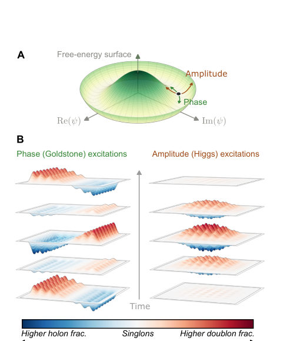
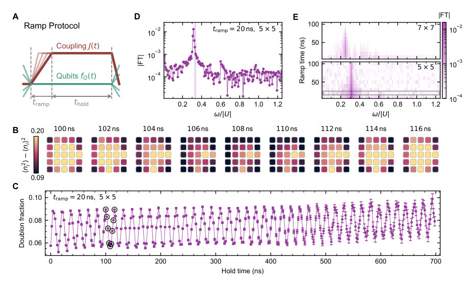
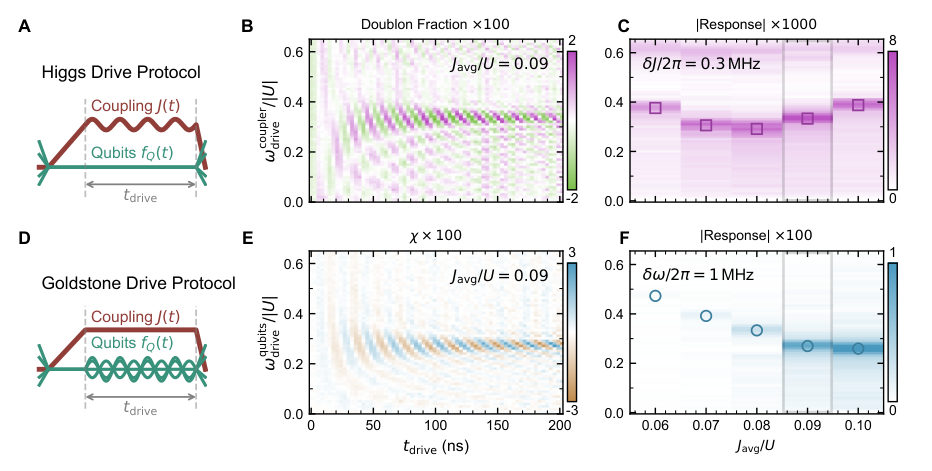
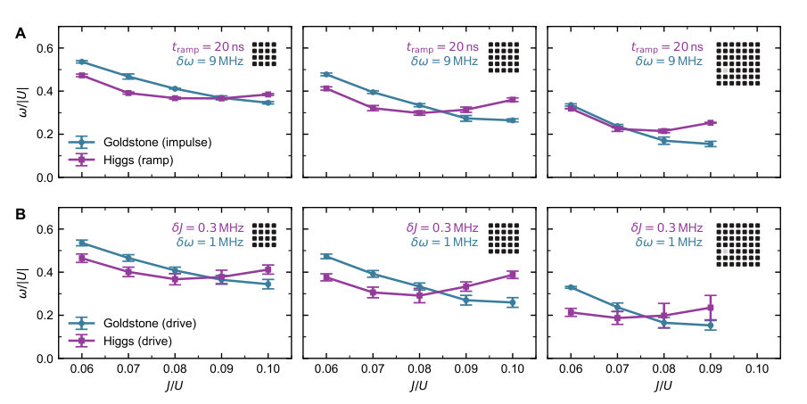
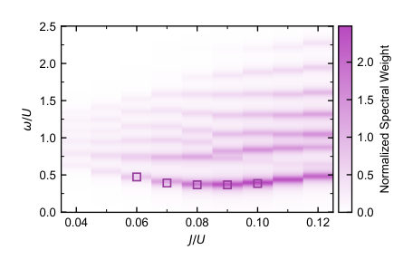
Summary. This paper reports on the selective control and imaging of Higgs and Goldstone collective modes in a Bose-Hubbard model simulated using transmon qubits. By using complementary local observables, the authors distinguish between amplitude (Higgs) and phase (Goldstone) fluctuations. Crucially, they show that the finite size of the quantum simulator allows for the coherent detection of the Higgs mode, a feature obscured in the idealized thermodynamic limit.
Why it may be interesting. This work provides a concrete, experimentally realized platform (qubits) to study fundamental concepts of symmetry breaking and collective excitations (Higgs/Goldstone) in quantum many-body systems, bridging theory and cutting-edge quantum hardware.
Main problem. The study aims to selectively control and image the dynamics of Higgs and Goldstone collective modes associated with amplitude and phase fluctuations in a lattice superfluid.
Main result. The research successfully demonstrates that finite quantum simulators can isolate and coherently probe the Higgs mode, overcoming spectral decay issues present in the thermodynamic limit.
Method. The study combines experimental techniques like vacuum Rabi spectroscopy and drive spectroscopy with theoretical tools like Matrix Product States (MPS) ansatzes for spectral function calculations.
Model / system. The system is modeled by the Bose-Hubbard Hamiltonian, realized experimentally on a two-dimensional array of transmon qubits, operating in the unit-filling regime.
Key observables. Doublon fraction oscillations, local density fluctuations, and the spectral function $S(\omega)$ are used to diagnose the modes.
Important parameters / regimes. The hopping strength ($J$), on-site interaction ($U$), and the ratio $J/U$ are key parameters, with finite system size effects being crucial.
Assumptions / limitations. The detection of the Higgs mode relies on the finite system size creating spectral gaps, and the analysis assumes the validity of the amplitude/phase mode picture.
Figures summary. Figures illustrate the free-energy landscape and the distinct signatures of Goldstone (density waves) and Higgs (doublon-holon pair oscillations) modes, alongside spectroscopy results mapping spectra across the phase transition.
Paper structure. The paper progresses by defining the physical model and Hamiltonian, detailing the separate excitation protocols for the Higgs and Goldstone modes, presenting measurements showing mode selectivity, and finally discussing finite-size scaling relative to the thermodynamic limit.
We realize the mesoscopic Bose-Hubbard model at unit-filling on a two-dimensional array of transmon qubits and selectively excite collective modes associated with amplitude or phase fluctuations of the superfluid order parameter. We identify these modes respectively as the Higgs and Goldstone modes using complementary local observables, extracted from measuring the number of particles on each site. Modulation of the coupling between sites excites the Higgs mode, which we detect via the density of doubly occupied sites. In contrast, modulation of the local chemical potential with an appropriately chosen spatial profile excites the lowest-frequency Goldstone mode, which we detect via changes in the local density. The two modes have different symmetries and do not couple to one another. By varying the system geometry, we characterize the impact of finite system size on the evolution of both modes. In the thermodynamic limit, decay into a continuum of lower-energy excitations can obscure the Higgs response. In our mesoscopic system, however, the finite system size leads to spectral gaps and allows us to detect the Higgs mode as a coherent, long-lived excitation. Our work demonstrates how finite quantum simulators can isolate and probe physical phenomena that become difficult to resolve in the thermodynamic, large-scale limit.
Authors: Aleksandr N. Mikheev, Orjan Ameye, Oded Zilberberg, Jeff Maki
Type: theory · Category: quantum gases · PDF: https://arxiv.org/pdf/2610.19083v1
Analysis basis: full PDF text, analyzed in chunks
Topic relevance: 🔥 Keldysh / 2PI / non-Gaussian methods 4/5 · methods for driven-dissipative 3/5 · non-equilibrium universality 3/5 · analog quantum simulation 2/5 · correlated / nonlocal dissipation 1/5 · driven-dissipative phase transition 1/5
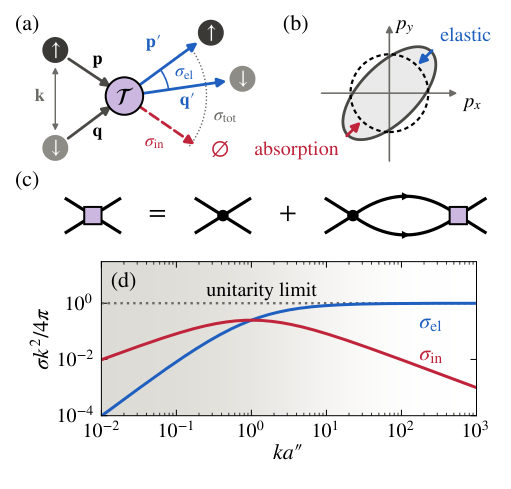
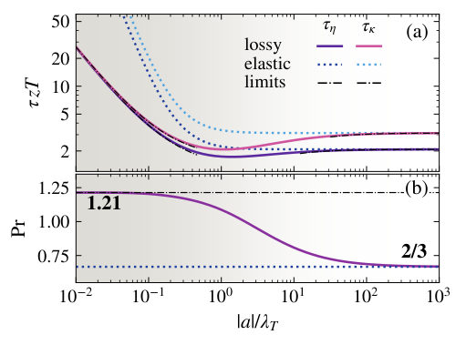
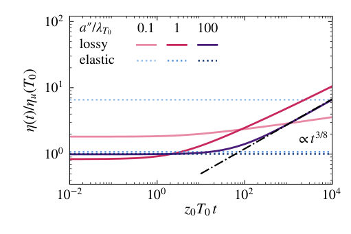
Summary. This theoretical work demonstrates that two-body particle loss can effectively induce hydrodynamic behavior in a quantum gas, even in the absence of intrinsic elastic interactions. By analyzing the resulting kinetic equation, the authors show that transport coefficients like viscosity approach universal values characteristic of the unitary Fermi gas. This highlights that engineered dissipation can serve as a resource to drive complex many-body dynamics.
Why it may be interesting. It provides a mechanism—loss—to engineer necessary collisions for fluid behavior in quantum matter, which is crucial for understanding non-equilibrium dynamics in cold atom experiments.
Main problem. To determine if two-body particle loss alone can induce hydrodynamic flow in a quantum gas, mimicking the role of elastic collisions.
Main result. Two-body loss can cause the gas to flow hydrodynamically, with transport coefficients approaching those of the unitary Fermi gas, and these coefficients grow universally with time as the gas heats up.
Method. The analysis uses a Boltzmann equation derived from the Keldysh action, employing the Chapman-Enskog expansion to calculate transport coefficients.
Model / system. The system is a non-degenerate Fermi gas governed by a Hamiltonian and subjected to two-body loss via Lindblad dissipators. The dynamics are analyzed through the evolution of the occupation number $f_{\sigma\mathbf{p}}$.
Key observables. Shear viscosity ($\eta$), thermal conductivity ($\kappa$), and the Prandtl number ($ ext{Pr}$).
Important parameters / regimes. The ratio of loss strength to thermal length scale ($a''/\lambda_T$), and the strong loss limit ($a'' \gg \lambda_T$).
Assumptions / limitations. The analysis assumes no intrinsic elastic scattering ($a' = 0$) and is restricted to the non-degenerate regime ($f_{\sigma\mathbf{p}} \ll 1$).
Figures summary. Figures illustrate loss-induced collisions, relaxation towards local equilibrium, and the time-dependence of transport coefficients ($\eta$) for different loss strengths.
Paper structure. The paper systematically analyzes the kinetic equation by splitting the collision integral into absorption and elastic parts, deriving transport coefficients using basis function expansions across different physical regimes (weak vs. strong loss).
Interactions turn a gas into a fluid. We show that two-body loss can take their place. Correlated loss induces elastic scattering, as required by the optical theorem, which dominates at strong loss via the quantum Zeno effect. A nondegenerate gas with only two-body loss thus flows hydrodynamically, with viscosity and thermal conductivity close to those of the unitary Fermi gas. As loss heats the gas, both grow in time with a universal exponent 3/8. Unlike single-particle loss, two-body loss can engineer collisions, and hence transport, in quantum matter.
Authors: Yan Li, Yunfan Yang, Zenghui Bao, Jize Yang, Luyan Sun, Yipu Song, Yukai Wu, Hongyi Zhang, Luming Duan
Type: experiment · Category: quantum information and computing · PDF: https://arxiv.org/pdf/2610.19927v1
Analysis basis: full PDF text, analyzed in chunks
Topic relevance: 🔥 QC/QI experiment 4/5 · quantum measurements 3/5 · quantum optics experiment 3/5 · analog quantum simulation 2/5
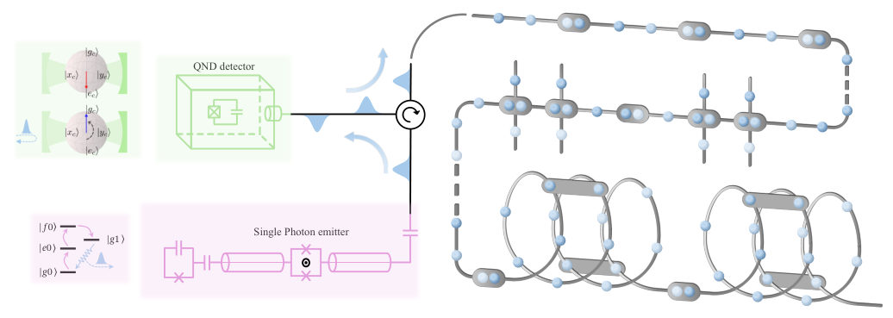
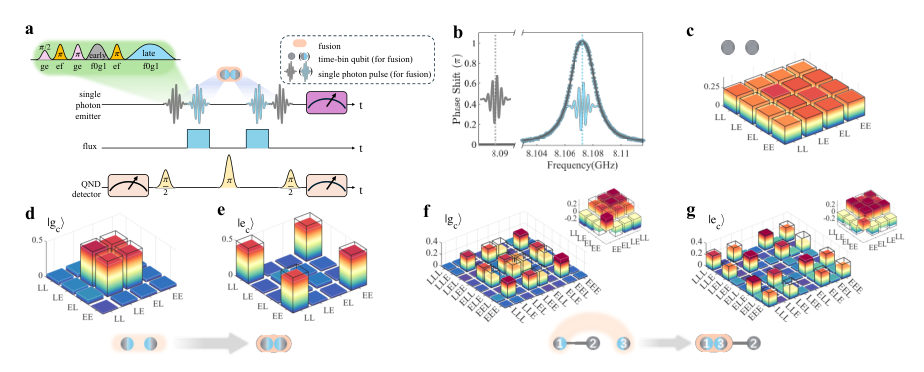
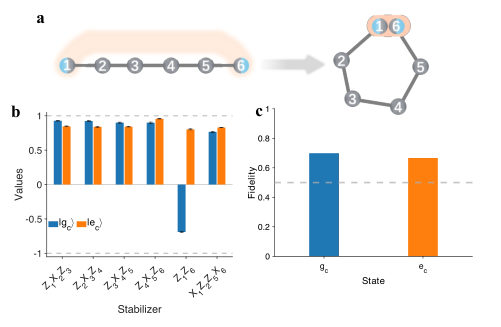
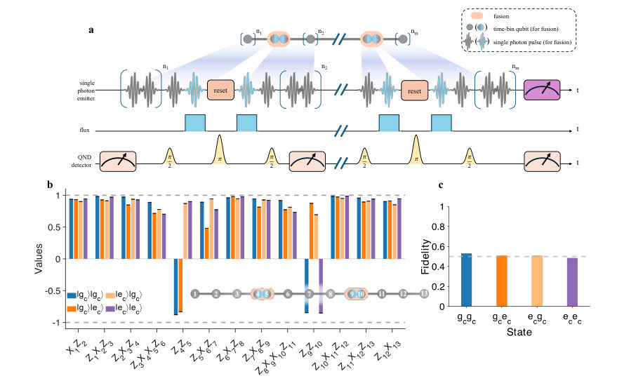
Summary. This paper presents a novel, deterministic, and programmable method for creating large-scale photonic graph states. By using superconducting circuits to perform controlled fusion operations on time-bin encoded qubits, the authors overcome the probabilistic limitations of previous methods. This work provides a crucial, scalable building block for fault-tolerant measurement-based quantum computation and quantum networking.
Why it may be interesting. For AMO/Quantum Optics, this work showcases a highly integrated quantum platform (emitter + superconducting circuits) to perform fundamental quantum operations (deterministic entanglement generation) necessary for building quantum networks.
Main problem. The primary challenge addressed is the scalable and programmable generation of large-scale photonic graph states, overcoming the limitations imposed by probabilistic fusion protocols.
Main result. The authors demonstrate a deterministic fusion operation using superconducting circuits that successfully generates genuine multipartite entanglement across 13 photonic qubits, establishing a scalable framework for graph state synthesis.
Method. They utilize a deterministic fusion protocol based on nondestructively projecting pairs of flying microwave photonic qubits into Bell states via QND parity measurements on a transmon qubit.
Model / system. The system employs time-bin encoded photonic qubits generated from a single-photon emitter and measured using superconducting circuits containing a transmon qubit acting as a QND detector. The process is made scalable by incorporating active reset and reuse of matter qubits.
Key observables. Fusion fidelity (e.g., $\approx 89.94\%$), stabilizer expectation values, and the entanglement witness ($W_{G_n} < 0$) to certify genuine multipartite entanglement.
Important parameters / regimes. The ability to reset matter qubits is crucial for circumventing coherence constraints and enabling repetitive, scalable fusion operations.
Assumptions / limitations. The analysis assumes the redundantly encoded graph state is local-Clifford equivalent to a standard graph state, allowing the use of stabilizer measurements as a diagnostic tool.
Figures summary. Figures illustrate the schematic of the scalable generation process, the pulse sequence for deterministic fusion, and the resulting graph structures (e.g., 2D ring graphs) with associated fidelity and entanglement witness measurements.
Paper structure. The paper details the physical setup, first demonstrating the deterministic fusion of two qubits into a Bell state. It then extends this to programmable fusion to build complex structures like ring graphs, culminating in a scalable protocol for generating large linear graph states.
Entanglement in multiphoton graph states is an important resource with various applications, such as measurement-based quantum computing and memory-less quantum repeaters. While some primitive instances have been successfully prepared, scalable generation of large-scale graph states with programmable connections remains an outstanding challenge. Fusion provides a promising "divide-and-conquer" approach by linking smaller resource states into larger, more complex graphs. However, its practical scalability has been limited by the probabilistic nature of conventional fusion protocols, which necessitates extensive hardware overhead and feed-forward resources to achieve deterministic outcomes. Here, we introduce and experimentally demonstrate a deterministic fusion operation with built-in error mitigation, capable of connecting small time-bin-encoded cluster states--originally generated on-demand from a quantum emitter--into larger, reconfigurable photonic graph states of increased sizes. The fusion operation is realized by nondestructively projecting pairs of flying microwave photonic qubits into Bell states using superconducting circuits with in-situ programmability. Crucially, the protocol features active reset and reuse of matter qubits during graph state generation, thereby circumventing the coherence constraints of the quantum emitter and enabling the generation of genuine multipartite entanglement across 13 photonic qubits. Our results establish a scalable framework for photonic graph-state synthesis, paving the way for fault-tolerant measurement-based quantum computation and distributed quantum networks.
Authors: Zi-Qi Zeng, Samuel Corona-Aquino, Tao Xie, Bin Yin, Yan Guo, Yukun Song, Yun Meng, Kai Zou, Song Li, Xiaolong Hu, Alfred B. U'Ren, Roberto de J. León-Montiel, Chenglong You, Baihong Li, Dongzhou Wang, Rui-Bo Jin
Type: both · Category: other · PDF: https://arxiv.org/pdf/2610.20202v1
Analysis basis: full PDF text, analyzed in chunks
Topic relevance: 🔥 interference shaping light 4/5 · 🔥 quantum optics experiment 4/5 · QC/QI experiment 1/5 · analog quantum simulation 1/5 · quantum measurements 1/5
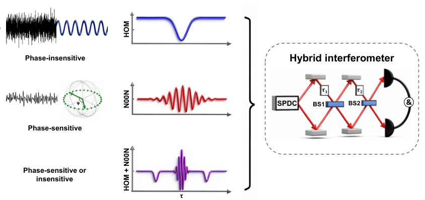
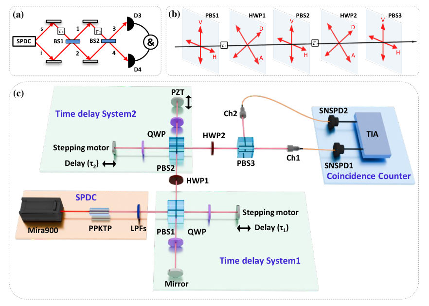
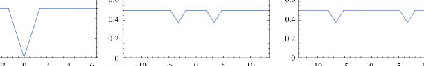
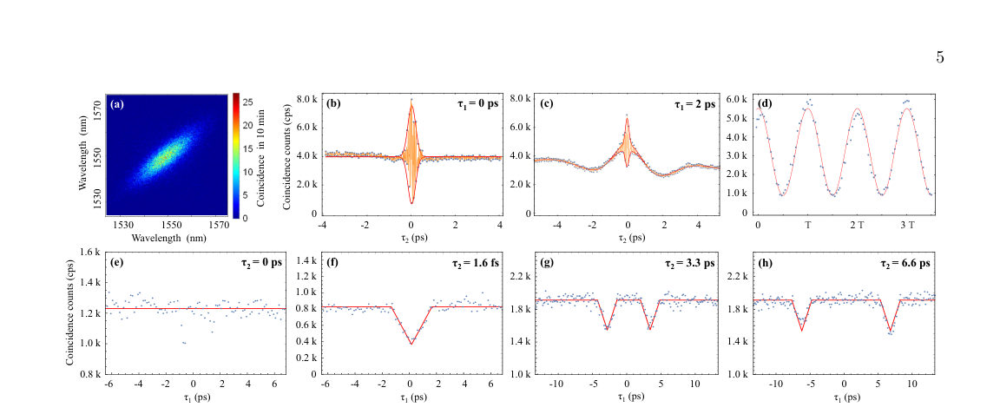
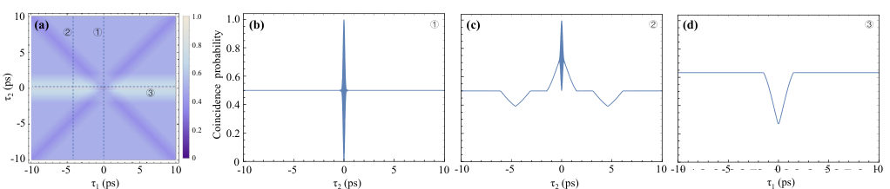
Summary. The paper introduces a novel hybrid quantum interferometer capable of simultaneously exhibiting and switching between Hong-Ou-Mandel and N00N-state interference. By controlling two time delays, the setup provides a versatile platform for quantum sensing. This tunability allows researchers to optimize measurements for different noise conditions, advancing integrated quantum technologies.
Why it may be interesting. This work is highly relevant to quantum optics and open quantum systems, demonstrating a practical, integrated platform for quantum metrology that adapts its sensitivity based on the expected noise environment.
Main problem. The authors addressed the need for a single, versatile quantum interferometer capable of dynamically switching between Hong-Ou-Mandel (HOM) interference (robust in high noise) and N00N-state interference (sensitive in low noise).
Main result. They successfully demonstrated a hybrid interferometer that can tune its operation between phase-insensitive, phase-sensitive, and mixed interference regimes by adjusting two time delays, $\tau_1$ and $\tau_2$.
Method. The study combines theoretical derivation of the coincidence probability $P(\tau_1, \tau_2)$ with experimental measurements using a type-II PPKTP crystal for entangled photon generation.
Model / system. The physical platform is a hybrid quantum interferometer utilizing Spontaneous Parametric Down-Conversion (SPDC) to generate entangled biphotons. The tunability is achieved by controlling two independent time delays, $\tau_1$ and $\tau_2$.
Key observables. Coincidence probability $P(\tau_1, \tau_2)$, exhibiting characteristic interference patterns corresponding to N00N-state fringes and HOM dips.
Important parameters / regimes. The controllable time delays $\tau_1$ and $\tau_2$, which dictate the operational regime (HOM vs. N00N).
Assumptions / limitations. Key theoretical assumptions include the factorization of the Joint Spectral Amplitude (JSA) and the use of a transform-limited pump pulse.
Figures summary. Figures illustrate the conceptual need for adaptability, the experimental setup, and theoretical/experimental maps showing the coincidence probability dependence on the two time delays, revealing both N00N fringes and HOM dips.
Paper structure. The paper progresses from establishing the need for tunable interferometry, deriving the theoretical coincidence probability formula, and then presenting both numerical simulations and experimental measurements confirming the dynamic control over the interference regimes.
Hong-Ou-Mandel (HOM) interference offers robustness in high-noise environments due to its phase-insensitive nature, while N00N-state interference provides enhanced phase sensitivity for precision measurements in low-noise settings. However, their realizations have typically required separate experimental platforms. Here, we report a single hybrid quantum interferometer that can dynamically transition between HOM and N00N-state interference by adjusting two time delays, $τ_1$ and $τ_2$. This tunability enables operation in phase-insensitive, phase-sensitive, or hybrid modes within a unified setup, as confirmed by theoretical analysis and experimental demonstration. Our system offers a versatile platform with potential for quantum sensing applications, paving the way for integrated quantum technologies capable of adapting to diverse noise conditions.
Authors: Murilo H. Magiotto, Millena B. Novaes, Wesley B. Cardoso, Ardiley T. Avelar, 1 Paulo H. Souto Ribeiro, Stephen P. Walborn, Guilherme L. Zanin, Rafael M. Gomes
Type: both · Category: quantum information and computing · PDF: https://arxiv.org/pdf/2610.20005v1
Analysis basis: full PDF text, analyzed in chunks
Topic relevance: 🔥 quantum optics experiment 4/5 · QC/QI experiment 3/5 · interference shaping light 2/5 · quantum measurements 2/5
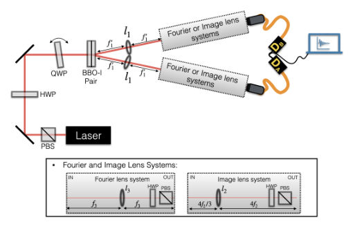
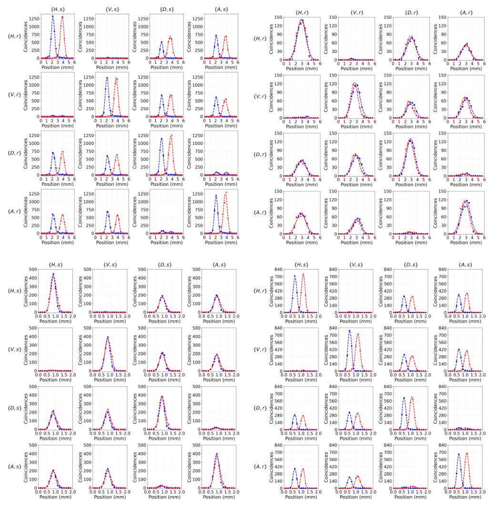
Summary. This paper characterizes a novel photon-pair source hyperentangled in both polarization and spatial degrees of freedom. By performing measurements in intermediate phase-space planes, the source maintains entanglement that would otherwise be destroyed by standard measurements. The results demonstrate that the source supports two independent, high-rate quantum channels suitable for secure quantum key distribution.
Why it may be interesting. This work directly addresses the practical realization and quantification of quantum resources (hyperentanglement) for quantum communication protocols, which is a core topic in quantum information theory.
Main problem. The paper characterizes a hyperentangled photon-pair source and benchmarks its performance for use in quantum key distribution (QKD).
Main result. The source successfully delivers two simultaneously usable, independently certified quantum channels—one in polarization and one in transverse spatial degrees of freedom—achieving a high total secret key rate.
Method. The authors analyze the source by performing measurements in intermediate planes of the fractional Fourier transform, which partially erases 'which-crystal' information and preserves entanglement.
Model / system. The physical system is a photon-pair source generated via two crossed type-I crystals in a non-collinear geometry. The entanglement is hyperentangled across polarization and transverse spatial modes.
Key observables. Quantum bit error rates (QBER), asymptotic secret key rates ($R$), Bell parameters, and concurrence.
Important parameters / regimes. Intermediate planes of the fractional Fourier transform (FRFT), which combine position and momentum bases; the relative strengths of correlations ($\sigma_+, \sigma_-$).
Assumptions / limitations. The analysis relies on the Gaussian approximation for the two-photon amplitude and assumes the joint error statistics factorize between the two degrees of freedom for key rate calculation.
Figures summary. The notes reference tables summarizing error rates in different basis combinations and equations defining the QBER and key rate bounds.
Paper structure. The paper first introduces the physical setup and the limitations of standard measurements. It then develops the theoretical framework using FRFT planes to maintain entanglement. Finally, it quantifies the resource by calculating QBER and asymptotic secret key rates for both degrees of freedom.
We characterize a source of photon pairs simultaneously entangled in polarization and in the transverse spatial degree of freedom, with the spatial measurements performed in intermediate planes of the fractional Fourier transform. The source consists of two crossed type-I crystals in a non-collinear geometry, such that the transverse variables carry information about the crystal of origin. Detection in the crystal plane reveals this information completely and destroys the polarization entanglement, so that a scheme using the near and far fields as conjugate spatial bases cannot support a parallel polarization channel. In intermediate planes both spatial bases combine position and momentum, such that the which-crystal information is partially erased, and the polarization entanglement survives in all four combinations of spatial bases. Applying Bell and Einstein-Podolsky-Rosen criteria to the same photon pairs certifies both degrees of freedom simultaneously. We evaluate quantum bit error rates and asymptotic secret key rates in each degree of freedom, and find that the source delivers two simultaneously usable channels per photon pair.
Authors: Johann Zöllner, Hendrik Mannel, Daniel Oppers, Martin Geller, Axel Lorke, Jürgen König
Type: experiment · Category: strongly correlated electrons · PDF: https://arxiv.org/pdf/2610.19950v1
Analysis basis: full PDF text, analyzed in chunks
Topic relevance: 🔥 Full counting statistics 4/5 · quantum measurements 2/5 · Keldysh / 2PI / non-Gaussian methods 1/5 · analog quantum simulation 1/5 · correlated / nonlocal dissipation 1/5 · driven-dissipative phase transition 1/5 · methods for driven-dissipative 1/5
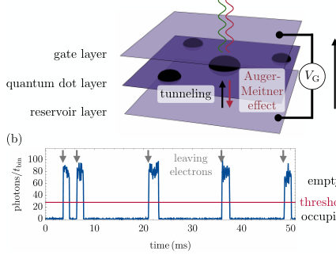
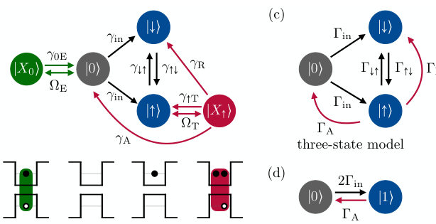
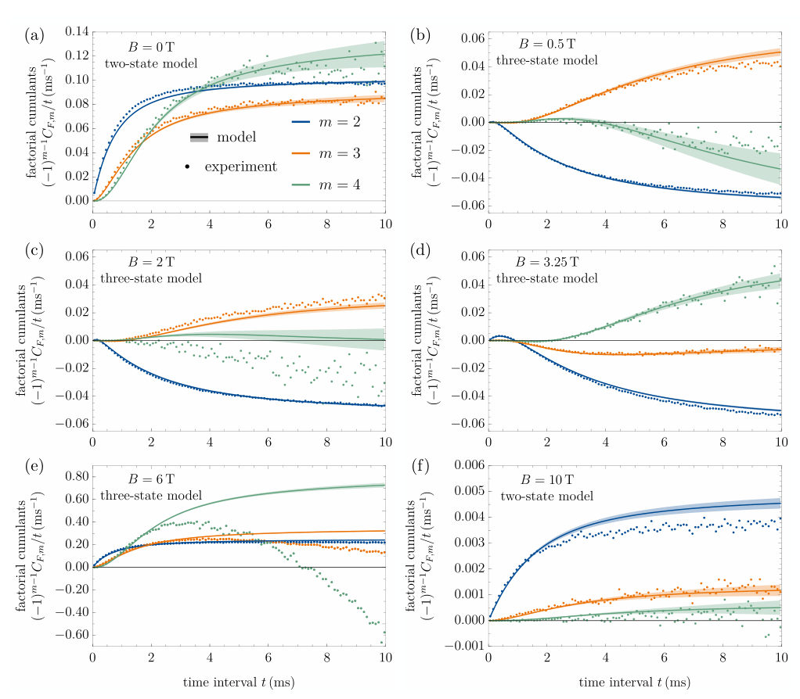
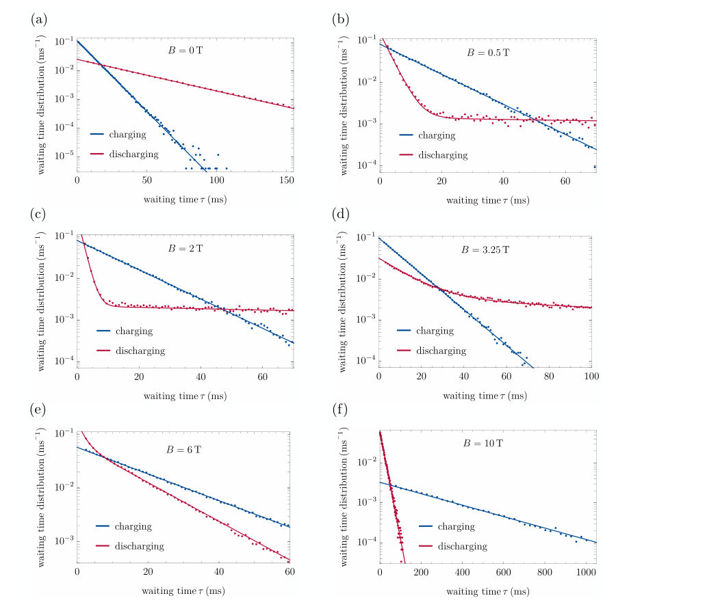
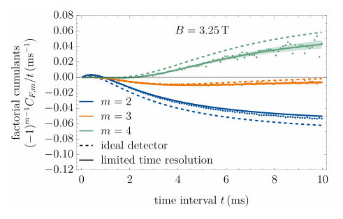
Summary. This paper experimentally demonstrates that charge fluctuations in a quantum dot violate a theoretical sign rule derived for non-interacting fermions. By analyzing the full counting statistics, the authors provide quantitative evidence that electron-electron interactions introduce correlations beyond the single-particle picture in mesoscopic transport.
Why it may be interesting. This work directly probes the breakdown of single-particle descriptions in interacting quantum systems, which is a central theme in strongly correlated electron physics and open quantum systems.
Main problem. The study aims to determine if electron transport in mesoscopic devices, even when Coulomb interactions are present, can still be accurately described by a simple single-particle picture.
Main result. The authors report the first experimental observation of a violation of a specific sign rule in fermionic counting statistics within a single-level quantum dot, providing evidence for electron-electron correlations.
Method. The analysis relies on measuring and analyzing the factorial cumulants of the charge-transfer statistics, comparing them against theoretical constraints derived from single-particle models.
Model / system. The system is a single-level quantum dot tunnel-coupled to reservoirs, controlled by gate voltage and subjected to a tuneable magnetic field. The theoretical modeling uses a state-and-N-resolved master equation.
Key observables. Factorial cumulants of the full counting statistics (e.g., second-, third-, and fourth-order cumulants) extracted from photon counting measurements.
Important parameters / regimes. The magnetic field ($B$) is the key parameter controlling the appearance of the sign-rule violation; the system is analyzed in regimes where spin degeneracy is lifted.
Assumptions / limitations. The analysis assumes that the charge-transfer statistics can be fully characterized by the factorial cumulants, and that the charging energy is large enough to prevent double occupancy.
Figures summary. Figures illustrate the physical setup (quantum dot structure) and the measurement signal, which is a random telegraph signal derived from monitoring resonance fluorescence during electron ejection events.
Paper structure. The paper establishes the theoretical criterion (sign rule violation) for interaction effects, details the experimental realization in a quantum dot, and presents the quantitative measurement and theoretical modeling that confirms the violation.
The analysis of charge fluctuations in a mesoscopic device can shed light on the fundamental question of whether or not a single-particle picture of electron transport is appropriate, even in the presence of Coulomb interaction. It has been shown on general grounds that mapping the interacting system onto a fermionic single-particle description is subject to strict constraints on the charge-transfer statistics. These constraints can be formulated in terms of a sign rule for the factorial cumulants of the full counting statistics. We report here on the experimental observation of a sign-rule violation in a most elementary model system, i.e. a single-level quantum dot, and provide theoretical modeling that can quantitatively reproduce the experimental data. This reveals the presence of correlations introduced by electron-electron interaction.
Authors: Kim Myung-Whun
Type: theory · Category: other · PDF: https://arxiv.org/pdf/2610.19569v1
Analysis basis: full PDF text, analyzed in chunks
Topic relevance: 🔥 Full counting statistics 4/5 · interference shaping light 3/5 · quantum measurements 3/5

Summary. This paper develops a novel framework to explain Michelson interference using only the on-off detection statistics of single-photon counters. By analyzing the positive semi-definiteness of the resulting data matrix and applying Herglotz's theorem, the authors show that the characteristic cosine fringe pattern is a mathematical necessity derived from the discrete statistics, rather than an assumption of a continuous wave function.
Why it may be interesting. This work offers a fundamentally statistical and algebraic approach to a cornerstone of quantum optics, providing a rigorous framework that derives wave-like interference patterns purely from discrete counting statistics, which is highly relevant to modern quantum measurement theory.
Main problem. The paper aims to reconstruct the phenomenon of Michelson interference using only the binary (on-off) detection statistics from a single-photon counter, bypassing the need for complex wave superposition assumptions.
Main result. It demonstrates that the harmonic form of the interference fringe is a necessary consequence of the algebraic constraints (positive semi-definiteness) satisfied by the discrete statistical data, rather than an axiom of a wave model.
Method. The methodology involves analyzing the positive semi-definiteness of a matrix constructed from the firing probabilities derived from the binary detection statistics and applying Herglotz's theorem.
Model / system. The physical system is a Michelson interferometer setup utilizing single-photon detection. The model focuses on the algebraic properties of the resulting binary (1 or 0) detection sequence recorded across varying path differences.
Key observables. Binary detection statistics (1/0), firing probability, and the resulting normalized response function $\hat{g}(\delta)$.
Important parameters / regimes. Path difference ($\delta$), low firing probability regime ($w \ll 0.01$), and the requirement that the matrix formed by the statistics must be positive semi-definite.
Assumptions / limitations. Assumes ideal conditions such as no photon bunching, negligible dark counts, and that the beam splitter does not split a photon into two outputs simultaneously.
Figures summary. Figure 1 illustrates the physical layout of the Michelson interferometer equipped with binary detectors.
Paper structure. The paper establishes the physical setup and the statistical measurement process, derives the necessary mathematical constraints from the positive semi-definiteness of the data matrix, applies Herglotz's theorem to constrain the functional form to a cosine series, and finally cross-validates the derived wavenumber distribution using an independent spectrometer measurement.
This paper reconstructs the Michelson interference phenomenon based solely on the binary (on-off) statistics of a single-photon counter and macroscopic path-difference data, without the a priori assumptions of complex wave superposition or prior spectral information. In contrast to the conventional approach that assumes light as a continuous complex wave function and considers interference between them, this study focuses on the algebraic properties inherent in discrete detection statistics. We verify that the discrete response data collected across various path differences form a positive semi-definite matrix, and apply Herglotz's theorem to this result. Consequently, we show that the harmonic form of the interference fringe is not a consequence of adopting a wave model as an axiom, but rather it is uniquely decomposed into a cosine average of wavenumbers dictated by testable algebraic constraints satisfied by the statistical data. Through this approach, the logical basis of the interference phenomenon can be described by the characteristics of the binary data itself, perfectly aligning with the modern optical experimental environment that relies entirely on discrete event statistics.
Authors: Shawn Geller, Tongyu Zhao, Alex Kwiatkowski, Scott Glancy, Raymond W. Simmonds, Emanuel Knill
Type: both · Category: quantum information and computing · PDF: https://arxiv.org/pdf/2610.19304v1
Analysis basis: full PDF text, analyzed in chunks
Topic relevance: 🔥 QC/QI experiment 4/5 · quantum measurements 3/5 · methods for driven-dissipative 2/5 · correlated / nonlocal dissipation 1/5
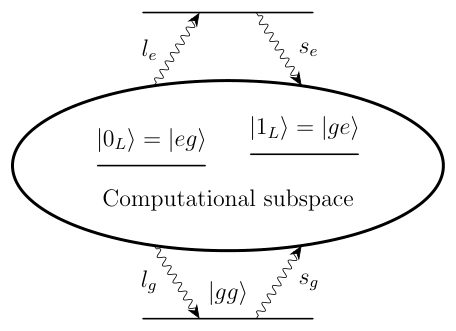
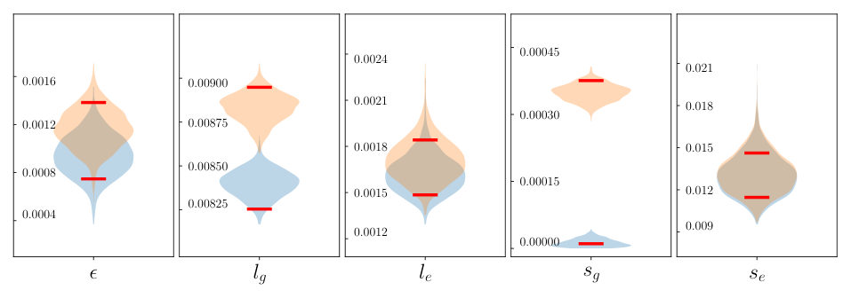
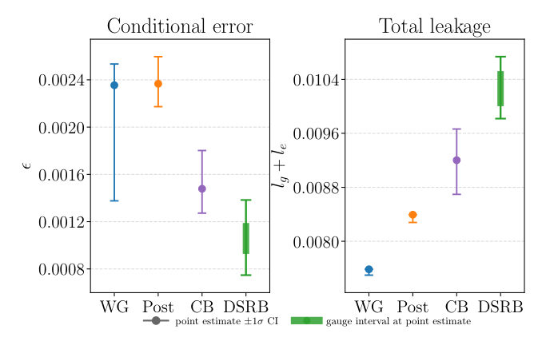
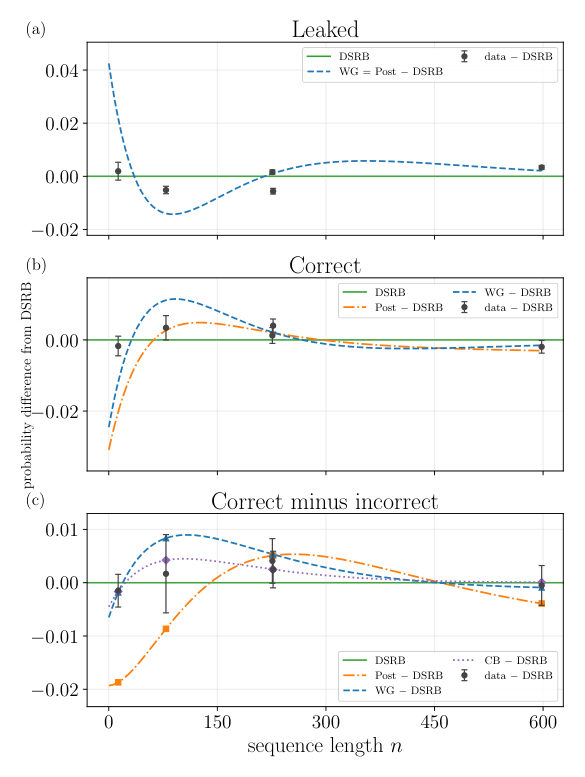
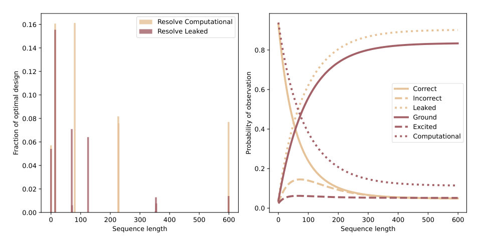
Summary. This paper presents an advanced benchmarking technique, Decohering Subgroup Randomized Benchmarking (DSRB), to characterize quantum gate performance in the presence of leakage and state preparation/measurement errors. By modeling the system as a Markov process and incorporating physical constraints, the authors develop a robust inference method. This method allows for the determination of reliable confidence intervals for critical performance metrics like fidelity and leakage rate, which is crucial for scaling quantum computation.
Why it may be interesting. This work provides a rigorous, theoretically grounded framework for benchmarking real quantum hardware, directly addressing the practical limitations imposed by noise sources like leakage and imperfect state preparation.
Main problem. The paper addresses the challenge of accurately characterizing qubit gate fidelity and leakage probability when the physical system suffers from State Preparation and Measurement (SPAM) errors.
Main result. The authors developed a measurement and inference method that uses known conservative bounds on SPAM to constrain the underdetermined parameters, yielding experimentally validated confidence intervals for fidelity and leakage.
Method. They model the process using Decohering Subgroup Randomized Benchmarking (DSRB) and employ advanced inference techniques, including constrained optimization and checking parameter feasibility across multiple orthants.
Model / system. The study focuses on physical qubits, exemplified by a qubit defined on the one-excitation subspace of two transmon qubits, which exhibits both a computational subspace and leakage levels.
Key observables. Average gate fidelities, total leakage rate, and the parameters defining the Markov process (e.g., transition probabilities).
Important parameters / regimes. Leakage probability, seepage probability, and the parameters defining the Markov process's transition matrix.
Assumptions / limitations. The analysis assumes gate-independent noise and relies on applying conservative, known bounds on SPAM errors to resolve parameter degeneracies.
Figures summary. Figure 1 schematically illustrates the four levels of the two transmon qubits, defining the computational subspace and the leakage subspace, and detailing leakage and seepage probabilities per step.
Paper structure. The paper details the system model, develops the DSRB theory, outlines the maximum likelihood inference framework, applies the method to the dual-rail transmon qubit, and concludes with experimental results comparing DSRB against conventional benchmarking methods.
A common problem with physical qubits is that the state can leak outside the computational subspace. To characterize the problem, it is desirable to measure both the leakage probability and the fidelity of gates inside the computational subspace. Randomized benchmarking is a readily accessible method for estimating average gate fidelities and can be modified to account for leakage. However, in the presence of state preparation and measurement errors (SPAM) there are parameter degeneracies, and fidelities and leakage become underdetermined. We study the example of qudits with any number of leakage levels under the assumption of gate-independent noise. We show that randomized benchmarking sequences with leakage level decoherence can be analyzed as a Markov process with noisy classical preparations and measurements. This result generalizes to randomized benchmarking with random gates from an arbitrary group that contains a phase-decohering subgroup. We characterize the parameter degeneracy in inferring the Markov process, preparations and measurements. Based on this characterization we develop a measurement and inference method taking advantage of known conservative bounds on SPAM to constrain fidelity, leakage and other parameters of the Markov process, state preparations and measurements. As part of our study, we experimentally implemented the measurement method for a qubit defined on the one-excitation subspace of two transmons, for which there are two leakage levels. We determined confidence intervals accounting for parameter degeneracy for a number of performance parameters of the system. For leakage and fidelity, we compare these intervals to those obtained for several conventional methods for leakage benchmarking.
Authors: Filip Marijanovic, Utso Bhattacharya, Abhishek Menon, Visal So, Guido Pagano, Eugene Demler
Type: both · Category: other · PDF: https://arxiv.org/pdf/2610.18970v1
Analysis basis: full PDF text, analyzed in chunks
Topic relevance: 🔥 analog quantum simulation 4/5 · Keldysh / 2PI / non-Gaussian methods 2/5 · quantum measurements 2/5 · QC/QI experiment 1/5 · quantum optics experiment 1/5
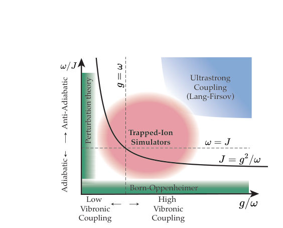
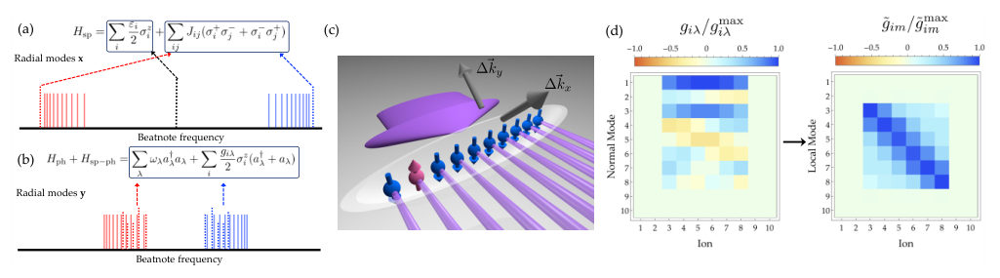
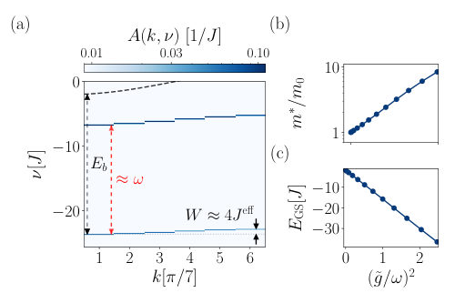
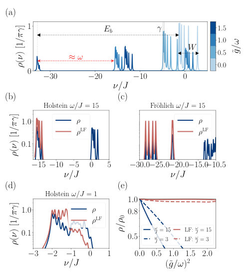
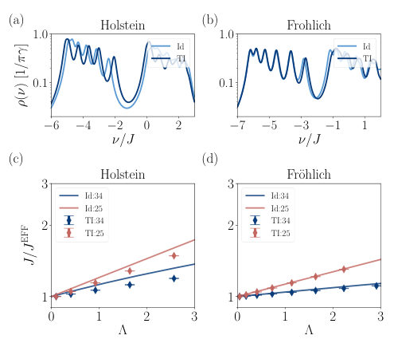
Summary. This paper proposes using trapped-ion quantum simulators to study polaron physics by engineering programmable spin-phonon Hamiltonians. The authors introduce advanced measurement techniques, such as displaced Green's functions, to overcome limitations in traditional spectroscopy. This allows for the direct mapping and tomography of the phonon dressing cloud surrounding the charge carrier, enabling controlled study of polaron formation in the non-perturbative regime.
Why it may be interesting. This work is highly relevant as it merges advanced concepts from quantum optics (trapped ions, coherent state measurements) with condensed matter physics (polarons), providing a blueprint for simulating complex many-body interactions.
Main problem. The paper addresses the challenge of studying polaron formation and dynamics in the strongly coupled, non-perturbative regime where electronic motion and lattice vibrations are comparable.
Main result. They demonstrate that trapped-ion quantum simulators provide a unique platform to engineer tunable spin-phonon Hamiltonians and perform polaron tomography by measuring displaced Green's functions.
Method. The study combines theoretical modeling (Lang-Firsov approximation, displaced Green's functions) with proposals for experimental realization using trapped ions.
Model / system. The system models polaron formation, involving strong coupling between mobile charge carriers/excitons and lattice vibrations (phonons). The Hamiltonian is a spin-phonon model ($H = H_{sp} + H_{ph} + H_{sp-ph}$), realized in a trapped-ion quantum simulator.
Key observables. Polaron band spectrum, phonon dressing cloud structure, single-particle residue ($Z_j$), and the displaced local density of states ($ ext{dLDOS}$).
Important parameters / regimes. The coupling strength ($ ilde{g}/\omega$), the ratio of hopping to phonon energy ($J/\omega$), and the ability to tune the spatial range of coupling (Holstein vs. Fröhlich regimes).
Assumptions / limitations. The analysis relies on mapping the system to pseudospins and utilizing displaced Green's functions to overcome spectral weight suppression inherent in conventional spectroscopy.
Figures summary. Figures illustrate the trapped-ion architecture for generating programmable spin-phonon interactions and compare $ ext{LDOS}$ vs. $ ext{dLDOS}$ across various coupling strengths, showing spectral shifts and sidebands.
Paper structure. The paper first establishes the physical problem and the trapped-ion platform for realizing tunable spin-phonon Hamiltonians. It then details advanced measurement techniques like displaced Green's functions and polaron tomography to characterize the dressed quasiparticle spectrum and the phonon environment.
Strong coupling between mobile charge carriers or excitons and lattice vibrations gives rise to polarons: quasiparticles formed by charge carriers dressed by a cloud of phonon excitations. Polaron formation determines transport properties of systems ranging from transition-metal oxides and organic semiconductors to light-harvesting complexes. In excitonic systems that admit a hard-core boson description, mapping the excitations to pseudospins provides a natural framework for studying polaron physics, including the nonperturbative regime in which hopping amplitudes, phonon energies, and coupling strengths are comparable. Here, we propose a trapped-ion blueprint for realizing spin-phonon Hamiltonians with programmable spatial coupling between excitation density and phonon displacements, encompassing local Holstein and long-range Fröhlich-type interactions. To access strongly dressed quasiparticles whose bare spectral weight is suppressed, we introduce displaced Green's functions implemented through spin-dependent phonon displacements. Their spectral response reveals the polaron band spectrum, including binding energies and phonon-excitation sidebands, while spatially resolved measurements probe the structure of the phonon dressing cloud, providing a route to polaron tomography. We further complement this spectroscopy with direct and ancilla-assisted measurements of spin-phonon correlations that track the coupled dynamics of the excitation and its environment. These approaches connect the emergent quasiparticle spectrum to the microscopic buildup of its dressing cloud, enabling controlled studies of how the spatial range of coupling shapes polaron formation and mobility.
Authors: Ruotong Zhai, Brendan Rhyno, Zain Mehdi, Naceur Gaaloul, Smitha Vishveshwara, Daniel E. Sheehy
Type: theory · Category: quantum gases · PDF: https://arxiv.org/pdf/2610.20382v1
Analysis basis: full PDF text, analyzed in chunks
Topic relevance: 🔥 analog quantum simulation 4/5 · Keldysh / 2PI / non-Gaussian methods 2/5 · methods for driven-dissipative 1/5 · non-equilibrium universality 1/5
Summary. This paper demonstrates that Bose-Einstein Condensates confined to spherical shells can act as analog simulators for curved spacetime cosmology. By quenching the interaction strength, the system exhibits quantum particle production analogous to processes in the early universe, allowing entanglement to be quantified using measurable spectral features.
Why it may be interesting. This work provides a concrete, controllable laboratory platform (BECs) to simulate fundamental cosmological processes like inflation and particle creation, bridging quantum information theory and early-universe cosmology.
Main problem. The study explores using thin spherical shell-shaped Bose-Einstein Condensates (BECs) as analog gravity simulators to model the dynamics of an expanding or contracting curved universe.
Main result. The system successfully models a positively curved universe with a time-varying scale factor, demonstrating spontaneous pair production characterized by oscillations analogous to Sakharov oscillations in the CMB.
Method. The theoretical approach involves dimensional reduction to an effective 2D Hamiltonian, followed by a Bogoliubov treatment to analyze quantum fluctuations.
Model / system. The physical system is an interacting BEC confined to a spherical shell. The dynamics are modeled by an effective 2D Hamiltonian, which is analyzed by linearizing the equations of motion for density and phase fluctuations.
Key observables. Spontaneous pair production, the structure factor S_l(t) (analogous to CMB power spectrum), and the logarithmic negativity (measure of entanglement).
Important parameters / regimes. Time-varying interaction strength (quench protocol), effective wavevector k, and the shell geometry parameters (radius R, thickness $\Delta R$).
Assumptions / limitations. The analysis relies on the thin-shell limit (dimensional reduction) and the Bogoliubov approximation for fluctuations.
Figures summary. Figures illustrate quantum particle production from both increasing and decreasing coupling quenches, showing the time-dependent structure factor and density-density correlation function.
Paper structure. The paper progresses from establishing the physical analogy using the 3D Hamiltonian to deriving the effective 2D Hamiltonian. It then solves the linearized equations of motion across multiple quench regimes, finally calculating observables like entanglement and particle production amplitudes.
Recent interest and realization of ultracold bosons confined in shell-shaped, or bubble, traps have opened up several directions in the study of Bose-Einstein condensates (BECs) in intrinsically curved geometries. Here, we explore the prospect of using thin spherical shell-shaped BECs as analog gravity simulators of an expanding or contracting curved universe. We study an interacting BEC bubble subject to a temporal quench of the interaction strength. Our theoretical approach, which uses a Bogoliubov treatment following a dimensional reduction of a spherical BEC to the low-energy excitations of a shell-shaped structure, demonstrates how this system serves as a laboratory analog for a positively curved universe having a time-varying scale factor. We investigate spontaneous pair production triggered by quenches associated with exponentially decaying or growing interaction strengths, focusing on the emergence of oscillations in the structure factor---analogous to Sakharov oscillations in the Cosmic Microwave Background angular power spectrum. We quantify the entanglement of the produced pairs via logarithmic negativity, and show how this measure may be extracted from the power spectrum. These findings establish a bridge between quantum information science and early-universe cosmology in a laboratory setting.
Authors: Sara Alfaro, Dipesh Bhanushali, Sankarshan Choudapurkar, Ashwin Bhartia, Thomas Lafenthaler, Tommaso Faorlin, Yannick Weiser, Lorenz Panzl, Thomas Monz, Rainer Blatt, Giovanni Cerchiari
Type: experiment · Category: other · PDF: https://arxiv.org/pdf/2610.20487v1
Analysis basis: full PDF text, analyzed in chunks
Topic relevance: 🔥 QC/QI experiment 4/5 · analog quantum simulation 2/5 · quantum measurements 2/5
Summary. The researchers demonstrated the first successful transport of thousands of trapped ions confined in a linear Paul trap over several kilometers. This achievement establishes a foundation for mobile quantum devices, allowing quantum experiments to be performed while the apparatus is in motion. The work is significant for developing portable quantum technologies and quantum network nodes.
Why it may be interesting. This work directly addresses the engineering challenge of quantum hardware portability, which is crucial for realizing quantum networks and distributed quantum sensing applications.
Main problem. The primary goal was to develop a mobile, transportable trapped-ion quantum device capable of operating while in motion, overcoming the limitations of current stationary setups.
Main result. The authors successfully demonstrated the transport of several thousand ions confined in a linear Paul trap over distances of several kilometers, maintaining storage times consistent with stationary lab measurements.
Method. The experiment involved trapping ions in a linear Paul trap, transporting the apparatus over long distances, and detecting the ions using a microchannel plate (MCP) detector after controlled extraction.
Model / system. The physical system is a trapped-ion quantum device utilizing a radio-frequency linear Paul trap geometry. The system is designed to handle various ion species ($ ext{Be}^+, ext{Ca}^+, ext{Sr}^+$) and is housed in a transportable rack.
Key observables. Ion count detected via MCP signal, ion storage lifetime ($ au$), and ion retention measured after transport periods (15 min, 45 min).
Important parameters / regimes. RF trapping frequency ($\Omega_{RF}$) of $2\pi imes 17$ MHz; transport distances of several kilometers; storage times up to 45 minutes.
Assumptions / limitations. The primary assumption is that the confinement mechanism in the Paul trap remains stable and functional while the entire apparatus is physically moved over long distances.
Figures summary. Figures illustrate the experimental setup (Fig. 1), the ion extraction sequence and data processing (Fig. 2), and the ion-transport measurements showing ion counts versus time during movement (Fig. 3).
Paper structure. The paper details the experimental setup, describes the ion generation and detection procedures, presents the results of ion transport over kilometers, and discusses the implications for mobile quantum applications.
Trapped-ion devices are being investigated for transportable applications, including the transfer of exotic charged particles between laboratories and the development of portable quantum technologies. To date, ion transport has been demonstrated only in magnetic (Penning) traps, whereas radiofrequency (Paul) traps are the predominant platform in quantum science. Here, we report the first transport of a few thousand ions confined in a linear Paul trap over distances of several kilometers, with transport durations of 15 and 45 min. These results establish a foundation for mobile trapped-ion quantum devices capable of operating while in motion and may enable the transport of exotic ions in Paul traps between experimental facilities.
Authors: Vladimir Rosenhaus, Daniel Schubring
Type: theory · Category: statistical mechanics · PDF: https://arxiv.org/pdf/2610.19130v1
Analysis basis: full PDF text, analyzed in chunks
Topic relevance: 🔥 Keldysh / 2PI / non-Gaussian methods 4/5 · non-equilibrium universality 3/5 · methods for driven-dissipative 1/5
Summary. This work develops kinetic equations for strongly coupled quantum systems using large N expansions. It contrasts the standard Boltzmann equation derived for vector models with a novel, non-local equation for SYK-like random coupling models. The research reveals evidence for a new strong turbulence scaling exponent, advancing the understanding of non-equilibrium quantum dynamics.
Why it may be interesting. The derivation of non-standard kinetic equations and the identification of novel strong turbulence scaling exponents provide theoretical tools for understanding non-equilibrium dynamics in complex quantum systems.
Main problem. The paper derives kinetic equations for strongly coupled, far-from-equilibrium field theories, specifically analyzing the transition between weak and strong turbulence regimes.
Main result. For large N random coupling (SYK-like) models, the resulting kinetic equation lacks a local-in-time collision integral, suggesting a novel strong turbulence scaling exponent.
Method. The authors employ the large N expansion technique combined with the Keldysh formalism to derive and analyze the kinetic equations governing the system's dynamics.
Model / system. The study examines large N vector models with O(N) symmetry and random coupling (SYK-like) models in d dimensions, applicable to systems like spin wave and Langmuir ion-acoustic turbulence.
Key observables. Occupation numbers ($n_k$), the retarded propagator ($D_R$), and the collision integral ($I_{ ext{coll}}$).
Important parameters / regimes. The analysis distinguishes between weak coupling (UV) and strong coupling (IR) regimes, characterized by different scaling exponents.
Assumptions / limitations. Key approximations include the large N expansion, the quasi-classical approximation for vector models, and the Markovian limit for deriving the collision integral.
Figures summary. Figure 1 illustrates the large-N expansion framework, while subsequent analysis focuses on deriving and comparing the structure of the kinetic equation in different coupling regimes.
Paper structure. The paper progresses by first establishing the general kinetic equation structure using the Keldysh formalism, then applying this framework to the vector model (yielding standard Boltzmann dynamics), and finally analyzing the unique, non-local collision integral for the random coupling (SYK-like) model.
We apply large $N$ expansion techniques to derive kinetic equations for strongly coupled, far-from-equilibrium field theories with $O(N)$ symmetry. For large $N$ vector models, the quasi-classical approximation holds. Incorporating arbitrary momentum-dependent interactions, we show the dynamics obey the standard kinetic equation, with the scattering amplitude given by the retarded propagator of the auxiliary Hubbard-Stratonovich field. This has broad applications to systems like spin wave and Langmuir ion-acoustic turbulence. For large $N$ random coupling (SYK-like) models in $d$ dimensions, leading-order melon diagrams induce order-one propagator renormalization and finite spectral width. The corresponding kinetic equation, unlike those for standard weakly interacting systems, does not have a local-in-time collision integral. We find evidence for a stationary, scale-invariant infrared solution, revealing a potentially novel strong turbulence scaling exponent.
Authors: Romain Dalidet, Marialuisa Capezzuto, Hugo Degert, Davide D'Ambrosio, Saverio Avino, Anthony Martin, Sebastien Tanzilli, Laurent Labonte, Paolo De Natale, Gianluca Gagliardi
Type: experiment · Category: other · PDF: https://arxiv.org/pdf/2610.19752v1
Analysis basis: full PDF text, analyzed in chunks
Topic relevance: 🔥 quantum optics experiment 4/5 · interference shaping light 3/5 · quantum measurements 1/5
Summary. The researchers implemented a quantum-enhanced sensing scheme for fiber-optic strain sensors using entangled photon pairs. By comparing measurements taken with classical light versus quantum light, they experimentally demonstrated that the measurement noise can be pushed below the standard quantum limit. This confirms the potential of quantum metrology to improve sensor sensitivity, especially when high optical power is impractical.
Why it may be interesting. This work directly applies quantum optics principles (entanglement, NOON states) to a practical, macroscopic sensing platform (fiber optics), providing experimental validation of quantum metrology beyond the SQL in a low-power regime.
Main problem. The goal is to demonstrate a quantum-enhanced method for interrogating fiber-optic strain sensors to achieve measurement noise below the Standard Quantum Limit (SQL).
Main result. The experiment successfully showed that using entangled photon pairs (N=2 NOON state) reduces the phase noise below the shot-noise limit, demonstrating a quantum advantage for sensing under low-power constraints.
Method. The setup uses an in-fiber Mach-Zehnder interferometer (MZI) readout coupled to a Fabry-Perot resonator interrogated by either classical coherent light or entangled photon pairs generated via SPDC.
Model / system. The physical system is an all-fiber-optic sensor utilizing a Fabry-Perot resonator interrogated via an in-fiber MZI. The sensing mechanism relies on measuring strain-induced optical phase shifts ($\delta\phi$).
Key observables. Phase fluctuations ($\delta\phi$), Power Spectral Density (PSD) of phase noise, Allan deviation ($\sigma( au)$), and coincidence counts of entangled photons.
Important parameters / regimes. Standard Quantum Limit (SQL), Heisenberg Limit (HL), strain magnitude, and low optical power regimes.
Assumptions / limitations. The noise floor in the single-photon regime is assumed to be dominated by shot noise, allowing for a clear comparison with the quantum enhancement.
Figures summary. Figure 2 compares single-photon readout (classical) against the SQL using time traces, Allan deviation, and PSD when strain is applied. Figure 3 compares phase readout using non-classical light, showing sub-shot noise performance in Allan deviation and PSD.
Paper structure. The paper establishes the classical sensing baseline by measuring noise approaching the SQL. It then introduces the quantum enhancement using entangled pairs, demonstrating a measurable reduction in noise below the SQL across various diagnostic plots (Allan deviation, PSD).
Fiber-optic sensors enable high-sensitivity measurements of various physical parameters. Here, we demonstrate a quantum-enhanced interrogation of an all-fiber-optic Fabry-Perot resonator, employing entangled two-photon interference to probe directly strain-induced optical phase shifts. The resonator is interrogated by a narrow-linewidth laser that is frequency-locked to its resonance mode, thereby exploiting the cavity's inherent sensitivity to variations in the fiber length. To access the phase fluctuations transferred to the interrogation field due to external perturbations on the sensor, we implement an in-fiber Mach-Zehnder interferometer readout. This configuration allows the sensor to operate both with classical coherent light and with entangled photon pairs generated via spontaneous parametric down-conversion. Harnessing two-photon entangled states corresponding to an N = 2 NOON state, we experimentally demonstrate a reduction of the measurement noise below the standard quantum limit. These results provide clear evidence of the quantum advantage in enhancing fiber-optic sensors under practical constraints on optical power.
Authors: Hyesung Choi, Antonio Mandarino, Mahn-Soo Choi
Type: theory · Category: other · PDF: https://arxiv.org/pdf/2610.19923v1
Analysis basis: full PDF text, analyzed in chunks
Topic relevance: 🔥 non-equilibrium universality 4/5 · analog quantum simulation 3/5
Summary. This paper analyzes the non-equilibrium dynamics of the Kitaev honeycomb model driven across a topological quantum critical point. By comparing periodic tubes to finite-width ribbons (zigzag and armchair), the authors show that boundary Majorana modes dictate deviations from ideal Kibble-Zurek scaling. This work establishes crucial benchmarks for understanding how edge physics governs topological quantum quenches.
Why it may be interesting. The work provides concrete, geometry-resolved benchmarks for simulating non-equilibrium dynamics in topological systems, directly addressing how boundary physics modifies universal scaling laws relevant to quantum simulation.
Main problem. The study investigates how the presence of Majorana edge modes on boundaries modifies the universal Kibble-Zurek (KZ) scaling laws observed during non-equilibrium quantum quenches in topological matter.
Main result. Boundary Majorana modes fundamentally alter the dynamics: zigzag ribbons show suppression of defects due to gap flooring, while armchair ribbons exhibit width-parity-dependent defect plateaus, distinguishing them from ideal KZ scaling.
Method. The authors analyze the time evolution of the Kitaev honeycomb model by linearly ramping a bond coupling ($J_z$) across a quantum critical point, solving the resulting noninteracting Majorana fermion problem in various geometries.
Model / system. The system is the Kitaev honeycomb model, analyzed in the flux-free sector, mapped onto noninteracting Majorana fermions. It is studied in cylindrical geometries, comparing fully periodic tubes against finite-width zigzag and armchair ribbons.
Key observables. Defect production density, quench-generated entanglement entropy, and fermionic logarithmic negativity.
Important parameters / regimes. Ramp time ($ au$), ribbon width ($N_2$), and the ratio $N_2/\sqrt{ au}$ which controls the crossover scale.
Assumptions / limitations. The analysis assumes the system can be treated within the noninteracting Majorana fermion framework and compares results against the expected critical-line Kibble-Zurek scaling.
Figures summary. Figures illustrate the lattice structure, phase diagram, and finite-size scaling of entanglement entropy and logarithmic negativity for different ribbon geometries (zigzag vs. armchair) compared to periodic tubes.
Paper structure. The paper establishes the theoretical framework by mapping the spin model to Majorana fermions, then systematically compares the defect scaling and entanglement diagnostics across three boundary conditions (tube, zigzag, armchair) to pinpoint the role of edge modes.
Recent progress in programmable quantum simulators motivates exact benchmarks for nonequilibrium dynamics in topological quantum matter. We study the Kitaev honeycomb model driven through its critical regions by a linear ramp of the bond coupling $J_z$ over a ramp time $τ$, comparing zigzag and armchair ribbons with fully periodic tubes. The production of excitations exhibits a geometry-dependent finite-size crossover controlled by $N_2/\sqrtτ$, the ratio of the ribbon width to the Kibble--Zurek length. Periodic tubes obey the expected critical-line Kibble--Zurek scaling and serve as the boundary-free benchmark. Zigzag ribbons follow the same scaling until defect production is exponentially suppressed by a finite-width algebraic gap floor associated with the formation of Majorana edge modes, whose occupation is pinned by inversion parity. Armchair ribbons instead support transient Majorana edge modes with exponentially small gaps, producing width-parity-dependent defect plateaus: exactly one defect per unit length for odd widths and an approximate, transient plateau near one half for even widths. The quench-generated entanglement entropy and fermionic logarithmic negativity inherit the same geometry-dependent structure, and the negativity further distinguishes the coherence-borne entanglement of the Kibble--Zurek regime from the population-borne entanglement of the edge-mode plateaus. These results identify boundary Majorana modes as the mechanism controlling departures from ideal Kibble--Zurek dynamics and provide geometry-resolved benchmarks for programmable simulations of topological matter.
Authors: Piper C. Wysocki, Juan Gonzalez De Mendoza, Karl Mayer, Natalie C. Brown, Ciaran Ryan-Anderson, Jalan A. Ziyad, Jordan H. Hines, Daniel G. Hothem, Corey I. Ostrove, Timothy J. Proctor, Kevin C. Young, Robin J. Blume-Kohout, Charles H. Baldwin, Kenneth M. Rudinger
Type: both · Category: quantum information and computing · PDF: https://arxiv.org/pdf/2610.19034v1
Analysis basis: full PDF text, analyzed in chunks
Topic relevance: 🔥 QC/QI experiment 4/5 · correlated / nonlocal dissipation 1/5 · quantum measurements 1/5
Summary. This paper introduces Logical Gate Set Tomography (logical GST) to deeply characterize noise in quantum error correction codes. By applying this technique to trapped-ion hardware and simulators, the authors distinguish between simple stochastic errors and more complex coherent or non-Markovian errors. This work is crucial for advancing fault-tolerant quantum computing by providing actionable diagnostics for hardware improvement.
Why it may be interesting. The rigorous application of GST to the logical level provides a powerful diagnostic tool for fault-tolerant quantum computation, moving beyond simple fidelity metrics to diagnose the fundamental nature of noise (e.g., memory effects, coherence) in physical hardware.
Main problem. The goal is to thoroughly characterize noise in quantum error correction (QEC) by understanding the form of the noise (e.g., Markovian vs. non-Markovian, Pauli-stochastic vs. coherent), rather than just measuring effective noise rates.
Main result. The study found that while initial hardware data suggested Pauli-stochastic errors, detailed simulation revealed strong evidence for coherent logical errors and non-Markovianity, allowing for error attribution to specific physical sources.
Method. The authors introduce and apply Logical Gate Set Tomography (logical GST), which extends standard GST to characterize effective operations acting only on the logical degrees of freedom.
Model / system. The work uses the seven-qubit Steane code ($\llbracket 7, 1, 3 rbracket$) for logical encoding and is implemented on the Quantinuum System Model H1 (a 20-qubit trapped-ion processor), supplemented by a detailed system emulator (H1-1E).
Key observables. Gate fidelity, diamond distance, logical Pauli-stochastic error rates, logical non-Markovianity signatures, and coherent logical error parameters.
Important parameters / regimes. The analysis involves model selection using the Akaike Information Criterion (AIC) and fitting parameters related to coherent error generators (FOGI parameters).
Assumptions / limitations. The standard GST model often assumes the Markovian property (no context dependence), which the paper tests by analyzing syndrome correlations and comparing experimental vs. simulated results.
Figures summary. Figures schematically detail the logical GST protocol, show syndrome correlations across time steps, and illustrate the comparison between hardware measurements and emulator predictions regarding error types.
Paper structure. The paper introduces logical GST, details the protocol for characterizing the logical gate set, analyzes hardware data to identify error types (Pauli-stochastic), and contrasts these findings with detailed emulator simulations to pinpoint underlying physical error mechanisms like coherence and non-Markovianity.
Quantum error correction (QEC) can strongly suppress noise, but predicting whether a computation succeeds requires understanding not only how much effective noise persists after QEC, but what form that noise takes. To thoroughly characterize this noise, we introduce logical gate set tomography (``logical GST''). Logical GST produces detailed representations of noisy logical operations that can be used to derive higher-level metrics, such as gate fidelity and diamond distance, and to test for non-Markovian and coherent logical errors. We use logical GST to obtain the first full, self-consistent characterization of a universal single-qubit logical gate set, implemented in the seven-qubit Steane code using Quantinuum System Model H1, a 20-qubit trapped-ion quantum processor. In the experimental data from H1, logical GST identified predominantly logical Pauli-stochastic errors, found no evidence of logical non-Markovianity, and detected weak potential signatures of coherent logical error. By contrast, higher-shot datasets generated with Quantinuum's detailed system emulator, identify mechanisms for weak but statistically significant logical non-Markovianity and strong evidence of coherent logical error. Finally, we use logical GST to perform error attribution with the system emulator, revealing how specific physical error sources shape logical error mechanisms.
Authors: Fartash Chalangari, Anant Vijay Varma, Joonas Keski-Rahkonen, Esa Räsänen
Type: theory · Category: other · PDF: https://arxiv.org/pdf/2610.20152v1
Analysis basis: full PDF text, analyzed in chunks
Topic relevance: 🔥 scars & prethermalization 4/5 · Frenkel-Kontorova 1/5 · quantum measurements 1/5
Summary. This work demonstrates that a single impurity can act as a quantum gate, dynamically confining a high-energy wavepacket along a preferred direction in a 2D lattice. This pinning effect is robust, persisting even when classical transport mechanisms fail. The findings connect this control to the underlying structure of the system's eigenstates, suggesting a mechanism of impurity-induced variational scarring.
Why it may be interesting. The ability of a single, local defect to control quantum transport over long distances by manipulating wavepacket overlap with specific eigenstates is a key concept in understanding quantum localization and wave dynamics in engineered disordered media.
Main problem. The study investigates how a single, local repulsive impurity can dynamically confine a high-energy wavepacket in a 2D quantum lattice, suppressing transverse tunneling while maintaining directional propagation.
Main result. The impurity enhances directional confinement, a phenomenon linked to impurity-induced variational scarring, persisting even when the classical regular region shrinks.
Method. The analysis uses time evolution simulations (split-operator) and spectral analysis, comparing quantum probability distributions (Husimi function) against classical ensemble trajectories.
Model / system. The system is a single particle in a finite 2D lattice of quantum wells, governed by a Hamiltonian incorporating a lattice potential and a localized Gaussian impurity potential.
Key observables. Probability $P_\alpha(t)$ in specific channels, Husimi function density, and the mean channel probability $\langle P(T) angle_\alpha$.
Important parameters / regimes. High energies far above interwell barriers; impurity strength $A/V_0$; time $T=1000$.
Assumptions / limitations. The analysis relies on comparing quantum dynamics to classical dynamics and utilizing spectral decomposition methods.
Figures summary. Figures show the contrast between classical spreading and quantum confinement due to the impurity, and plots demonstrate nonmonotonic confinement dependence on impurity strength.
Paper structure. The paper progresses by defining the physical model and Hamiltonian, simulating wavepacket propagation, analyzing the confinement using spectral and time-averaging techniques, and finally linking the observed pinning to variational scarring.
We demonstrate that a single repulsive impurity enhances directional confinement of a high-energy wavepacket in a finite two-dimensional lattice of quantum wells. At energies far above the interwell barriers, the impurity suppresses transverse dynamical tunneling while preserving propagation along a principal lattice axis, even as the corresponding classical regular region shrinks. Confinement is strongest at impurity amplitudes comparable to the barrier height and weakens for stronger perturbations. Spectral analysis links this nonmonotonic pinning to the wavepacket's overlap with eigenstates concentrated along the launch direction, consistent with impurity-induced variational scarring. These results show that a single local defect can control quantum propagation over distances far exceeding its own spatial extent.
Authors: Akira Sone, Akram Touil, Emery Doucet, Sebastian Deffner
Type: theory · Category: statistical mechanics · PDF: https://arxiv.org/pdf/2610.20528v1
Analysis basis: full PDF text, analyzed in chunks
Topic relevance: 🔥 quantum measurements 4/5 · Full counting statistics 1/5 · Keldysh / 2PI / non-Gaussian methods 1/5
Summary. This paper compares two methods for calculating quantum work statistics—One-Time (OTM) and Two-Time (TTM)—by testing their consistency against the symmetry of entanglement. The authors prove that the OTM scheme is fundamentally more consistent, as its results naturally follow from entanglement symmetry for all processes. Conversely, the TTM scheme is shown to be mathematically flawed, only yielding correct results for an infinitesimally small set of driving unitaries.
Why it may be interesting. This work provides a deep theoretical understanding of measurement processes in quantum thermodynamics, showing how fundamental symmetries (like envariance) can resolve ambiguities in defining physical observables like work, which is crucial for understanding non-equilibrium quantum dynamics.
Main problem. The paper compares the consistency of quantum work statistics derived from two measurement schemes: the standard Two-Time Measurement (TTM) and the One-Time Measurement (OTM), using entanglement-assisted invariance (envariance) as the guiding symmetry.
Main result. The OTM scheme yields work statistics naturally from envariance for all unitaries, whereas the TTM scheme only yields consistent results for a set of unitaries with zero Haar measure, indicating a fundamental flaw in the TTM approach.
Method. The authors use theoretical derivations involving unitary time evolution, defining work distributions via state overlaps, and employing advanced mathematical tools like Haar measure analysis and concentration inequalities to rigorously compare the two schemes.
Model / system. The system is a bipartite quantum system ($H = H_1 \otimes H_2$) undergoing unitary time evolution driven by time-dependent Hamiltonians. The analysis focuses on the work extracted during the process.
Key observables. Work distribution, overlap functions ($G_{w,w'}$), and the degree of orthogonality of the derived state components ($\langle\phi_w|\phi_{w'} angle$).
Important parameters / regimes. The driving unitary $U_ au$, the initial and final energy spectra ($E_n, E'_m$), and the entanglement-assisted invariance principle.
Assumptions / limitations. The TTM approach neglects the energetic and informational costs of projective measurements. The mathematical proofs rely on properties of real analytic functions on compact manifolds and the use of Haar measure on $U(d)$.
Figures summary. Not specified.
Paper structure. The paper progresses by first defining the physical setup and the two measurement schemes (OTM vs. TTM). It then rigorously analyzes the mathematical consistency of the TTM scheme, proving its failure for generic unitaries. Finally, it establishes the OTM scheme's superior consistency by linking its results directly to the fundamental symmetry of entanglement.
We demonstrate that the one-time measurement scheme is more consistent than the standard two-time measurement scheme with respect to the fundamental symmetry of entanglement, namely entanglement-assisted invariance (envariance). In particular, the work statistics obtained from the one-time measurement scheme arise naturally as a direct consequence of envariance for any driving unitary, without involving an explicit measurement postulate, whereas the analogous identification for the two-time measurement scheme is possible only for a Haar-measure-zero set of unitaries. This envariance-based formulation eliminates the ambiguity in work statistics related to the energetic cost of measurement.